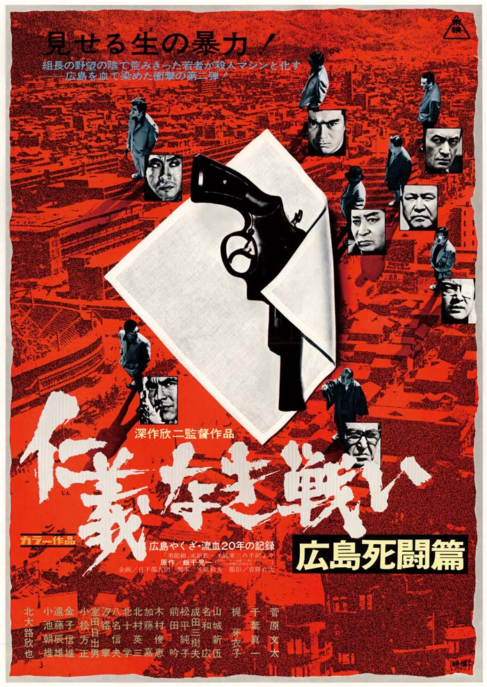

ヤクザYakuza, also known as 極道gokudō "the extreme path", are members of transnational organized crime syndicates originating in Japan. The Japanese police and media by request of the police, calls them 暴力団bōryokudan "violent groups", while the yakuza call themselves 任侠団体ninkyō dantai "chivalrous organizations." The English equivalent for the term yakuza is gangster, meaning an individual involved in a Mafia-like criminal organization.[2] The yakuza are known for their strict codes of conduct, their organized fiefdom nature and several unconventional ritual practices such as yubitsume
or amputation of the left little finger.[3] Members are often described as males, wearing "sharp suits" with heavily tattooed bodies and slicked hair.[4] This group is still regarded as being among "the most sophisticated and wealthiest criminal organizations".[5]
At their height, the yakuza maintained a large presence in the Japanese media and operated internationally. At their peak in the early 1960s, police estimated that the yakuza had a membership of more than 200,000.[6] However, this number has drastically dropped, a decline attributed to changing market opportunities and several legal and social developments in Japan which discourage the growth of yakuza membership.[7] The yakuza still regularly engage in an array of criminal activities and many Japanese citizens still remain fearful of the threat these individuals pose to their safety.[8] However, there remains no strict prohibition on yakuza membership in Japan today, although much legislation has been passed by the Japanese government aimed at impeding revenue and increasing liability for criminal activities.[8]
The name yakuza originates from the traditional Japanese card game Oicho-Kabu, a game in which the goal is to draw three cards adding up to a score of 9. If the sum of the cards exceeds 10, its second digit is used as the score instead, and if the sum is exactly 10, the score is 0. If the three cards drawn are 8-9-3 (pronounced ya-ku-sa in Japanese), the sum is 20 and therefore the score is zero, making it the worst possible hand that can be drawn.[9] In Japanese, the word yakuza is commonly written in katakana (ヤクザ).
Rituals
Yubitsume also otoshimae, or the cutting off of one's finger, is a form of penance or apology. Upon a first offense, the transgressor must cut off the tip of his left little finger and give the severed portion to his boss. Sometimes an underboss may do this in penance to the oyabun if he wants to spare a member of his own gang from further retaliation. This practice has started to wane amongst the younger members, due to it being an easy identifier for police.[18]
Its origin stems from the traditional way of holding a Japanese sword. The bottom three fingers of each hand are used to grip the sword tightly, with the thumb and index fingers slightly loose. The removal of digits starting with the little finger moving up the hand to the index finger progressively weakens a person's sword grip.
The idea is that a person with a weak sword grip then has to rely more on the group for protection—reducing individual action. In recent years, prosthetic fingertips have been developed to disguise this distinctive appearance.[16]
Many Yakuza have full-body tattoos (including their genitalia). These tattoos, known as irezumi in Japan, are still often "hand-poked", that is, the ink is inserted beneath the skin using non-electrical, hand-made and handheld tools with needles of sharpened bamboo or steel. The procedure is expensive, painful, and can take years to complete.[19]
When Yakuza members play Oicho-Kabu cards with each other, they often remove their shirts or open them up and drape them around their waists. This enables them to display their full-body tattoos to each other. This is one of the few times that Yakuza members display their tattoos to others, as they normally keep them concealed in public with long-sleeved and high-necked shirts. When new members join, they are often required to remove their trousers as well and reveal any lower body tattoos.
Yubitsume
Irezumi
Oicho-Kabu
Syndicates
Although Yakuza membership has declined since the implementation of the Anti-Boryokudan Act in 1992, there are still approximately 25,900 active Yakuza members in Japan as of 2020.[1] The Yakuza does not consist of just one group, rather there are many different syndicate groups that together form one of the largest organized crime groups in the world.[20]
The Yamaguchi-gumi is the largest Yakuza family, accounting for 30% of all Yakuza in Japan, with more than 8,200 members as of 2020. From its headquarters in Kobe, it directs criminal activities throughout Japan. It is also involved in operations in Asia and the United States. Shinobu Tsukasa, also known as Kenichi Shinoda, is the Yamaguchi-gumi's current oyabun. He follows an expansionist policy and has increased operations in Tokyo (which has not traditionally been the territory of the Yamaguchi-gumi.)
The Yamaguchi family is successful to the point where its name has become synonymous with Japanese organized crime in many parts of Asia outside Japan. Many Chinese or Korean persons who do not know the name "Yakuza" would know the name "Yamaguchi-gumi", which is frequently portrayed in gangster films.[citation needed][21]
One of the best-known bosses of the Yamaguchi-gumi was Kazuo Taoka, the “Godfather of all Godfathers”, who was responsible for the syndicate’s massive growth and success during the 20th century.
The Sumiyoshi-kai is the second largest Yakuza family, with an estimated 4,200 members. Sumiyoshi-kai is a confederation of smaller Yakuza groups. Its current head (会長 kai-cho) is Isao Seki. Structurally, Sumiyoshi-kai differs from its principal rival, the Yamaguchi-gumi, in that it functions like a federation. The chain of command is more relaxed, and its leadership is distributed among several other members.[21]
The Inagawa-kai is the third largest Yakuza family in Japan, with roughly 3,300 members. It is based in the Tokyo-Yokohama area and was one of the first Yakuza families to expand its operations outside of Japan.[21]
Films
A Diary of Chuji's Travels (Daisuke Itō, 1927)
Drunken Angel (Akira Kurosawa, 1948)
Battles Without Honor and Humanity(Kinji Fukasaku, 1973)
 or amputation of the left little finger.[3] Members are often described as males, wearing "sharp suits" with heavily tattooed bodies and slicked hair.[4] This group is still regarded as being among "the most sophisticated and wealthiest criminal organizations".[5]
At their height, the yakuza maintained a large presence in the Japanese media and operated internationally. At their peak in the early 1960s, police estimated that the yakuza had a membership of more than 200,000.[6] However, this number has drastically dropped, a decline attributed to changing market opportunities and several legal and social developments in Japan which discourage the growth of yakuza membership.[7] The yakuza still regularly engage in an array of criminal activities and many Japanese citizens still remain fearful of the threat these individuals pose to their safety.[8] However, there remains no strict prohibition on yakuza membership in Japan today, although much legislation has been passed by the Japanese government aimed at impeding revenue and increasing liability for criminal activities.[8]
or amputation of the left little finger.[3] Members are often described as males, wearing "sharp suits" with heavily tattooed bodies and slicked hair.[4] This group is still regarded as being among "the most sophisticated and wealthiest criminal organizations".[5]
At their height, the yakuza maintained a large presence in the Japanese media and operated internationally. At their peak in the early 1960s, police estimated that the yakuza had a membership of more than 200,000.[6] However, this number has drastically dropped, a decline attributed to changing market opportunities and several legal and social developments in Japan which discourage the growth of yakuza membership.[7] The yakuza still regularly engage in an array of criminal activities and many Japanese citizens still remain fearful of the threat these individuals pose to their safety.[8] However, there remains no strict prohibition on yakuza membership in Japan today, although much legislation has been passed by the Japanese government aimed at impeding revenue and increasing liability for criminal activities.[8] , a game in which the goal is to draw three cards adding up to a score of 9. If the sum of the cards exceeds 10, its second digit is used as the score instead, and if the sum is exactly 10, the score is 0. If the three cards drawn are 8-9-3 (pronounced ya-ku-sa in Japanese), the sum is 20 and therefore the score is zero, making it the worst possible hand that can be drawn.[9] In Japanese, the word yakuza is commonly written in katakana (ヤクザ).
, a game in which the goal is to draw three cards adding up to a score of 9. If the sum of the cards exceeds 10, its second digit is used as the score instead, and if the sum is exactly 10, the score is 0. If the three cards drawn are 8-9-3 (pronounced ya-ku-sa in Japanese), the sum is 20 and therefore the score is zero, making it the worst possible hand that can be drawn.[9] In Japanese, the word yakuza is commonly written in katakana (ヤクザ).